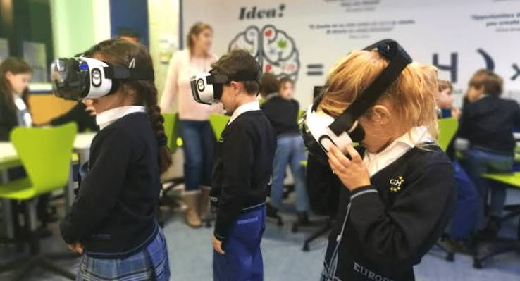

¿Qué es la RV y RA en el ámbito educativo?
La integración de la Realidad Virtual (RV) y la Realidad Aumentada (RA) en las aulas representa una evolución pedagógica significativa. La Realidad Virtual sumerge al estudiante por completo en un entorno digital tridimensional simulado, mientras que la Realidad Aumentada superpone elementos digitales e interactivos sobre el entorno físico real.
Estas tecnologías facilitan el aprendizaje activo mediante la metodología de "aprender haciendo". Al permitir la manipulación de objetos virtuales complejos en tiempo real, los estudiantes pueden visualizar conceptos abstractos de matemáticas, física o historia de una manera tangible e intuitiva.
Además, eliminan las barreras geográficas y económicas de las salidas de campo tradicionales, permitiendo llevar a cabo expediciones virtuales a museos internacionales o ecosistemas protegidos desde el aula.
Aplicaciones y Beneficios Principales
- Simulación de laboratorios químicos y mecánicos sin riesgos de accidentes.
- Recorridos históricos virtuales a civilizaciones antiguas e hitos arquitectónicos.
- Visualización de modelos moleculares y estructuras astronómicas en 3D.
- Aumento en el compromiso, la motivación y la retención de memoria a largo plazo.

Comparativa de Herramientas Educativas
| Plataforma | Tecnología | Área de Aplicación |
|---|---|---|
| Google Expeditions | Realidad Virtual / Aumentada | Geografía, Historia y Ciencias Naturales |
| Anatomy 4D | Realidad Aumentada | Biología y Anatomía Humana |
| Labster | Realidad Virtual | Simulación de Laboratorios de Biotecnología |